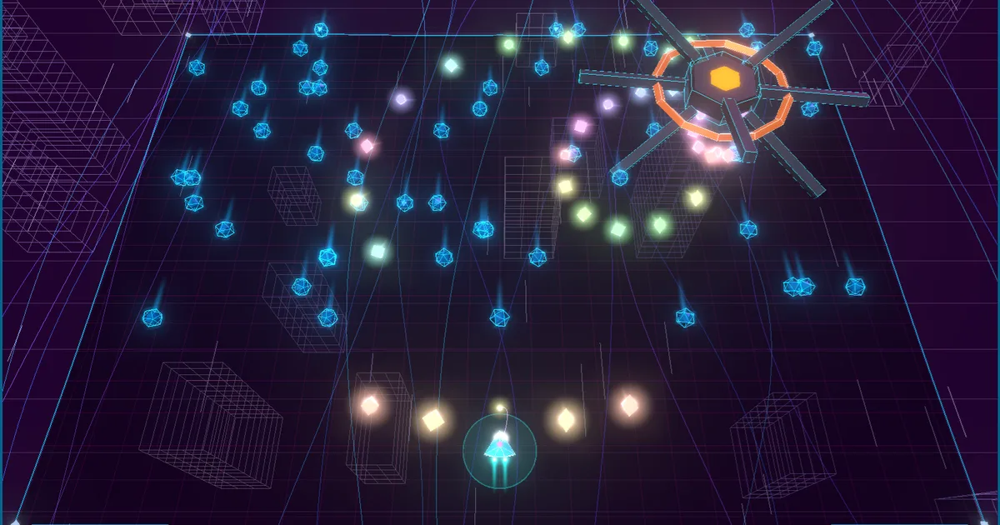

01 / 04AWARD-WINNING SERIES
80年代アーケードの手ざわりを、ネオンと現代のゲームデザインで再構築したシリーズ。
ネオンが弾け、スコアが跳ねる、一瞬で熱くなれるアクションゲームです。
IVS NEOCREA準グランプリ
IVS NEOCREABandai Namco 021 Fund賞
コードを書くのはAI、アイデアと手ざわりの調整は人。
そんな“バイブコーディング”で生まれたゲームを公開しています。
登録もインストールも不要、ブラウザを開けばPCでもスマホでもすぐ遊べます。
80年代アーケードの手ざわりを、ネオンと現代のゲームデザインで再構築したシリーズ。
ネオンが弾け、スコアが跳ねる、一瞬で熱くなれるアクションゲームです。
ルールは知っていても、相手が強いと奥が深い。
手軽に遊べるパズルから、本気のAIと戦えるボードゲームまで。
このサイトのゲームは、AIに相談しながらコードを書き、遊んでは直すことを繰り返して作っています。思いついたアイデアが、その日のうちに遊べる形になる。そのスピード感ごと楽しんでもらえたら嬉しいです。